Plantas Domesticas
Plantas de bajo cuidado
Si quieres una planta que no requiera mucho cuidado, estas son algunas opciones:
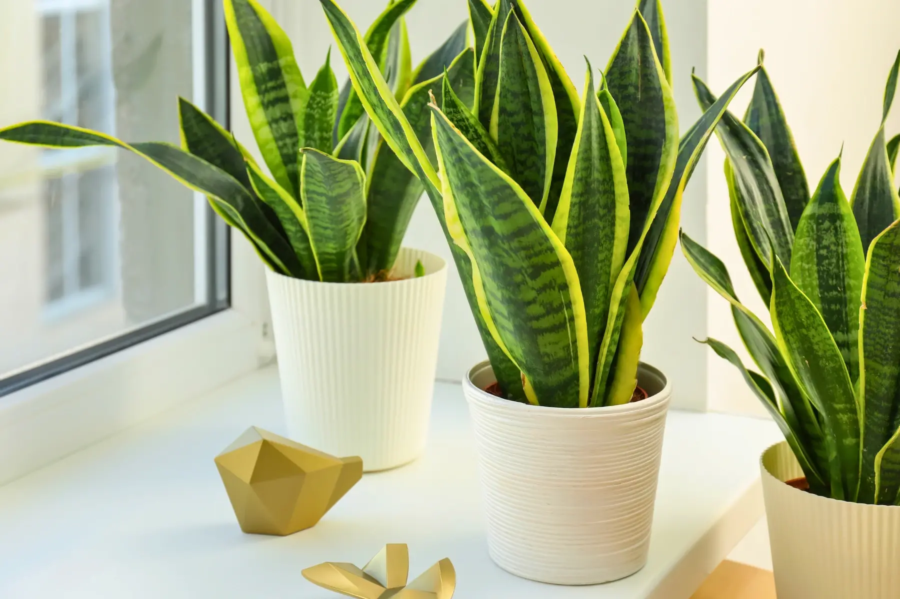
Sansevieria
(Lengua de suegra)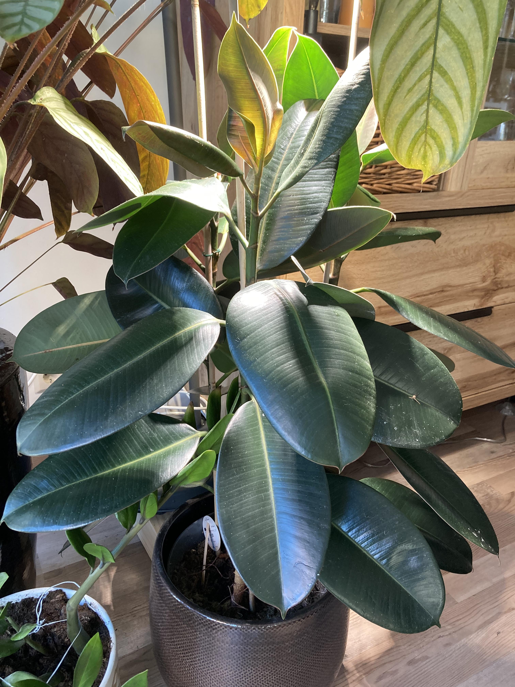
Ficus Elastica
(gomero)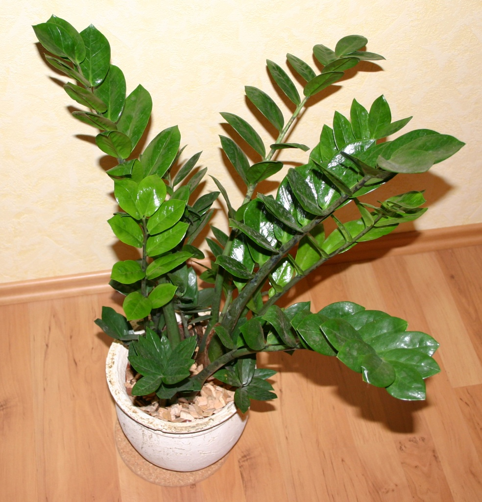
Zamioculca
(planta ZZ)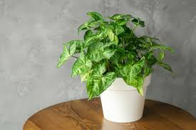
Potus
(hiedra del diablo)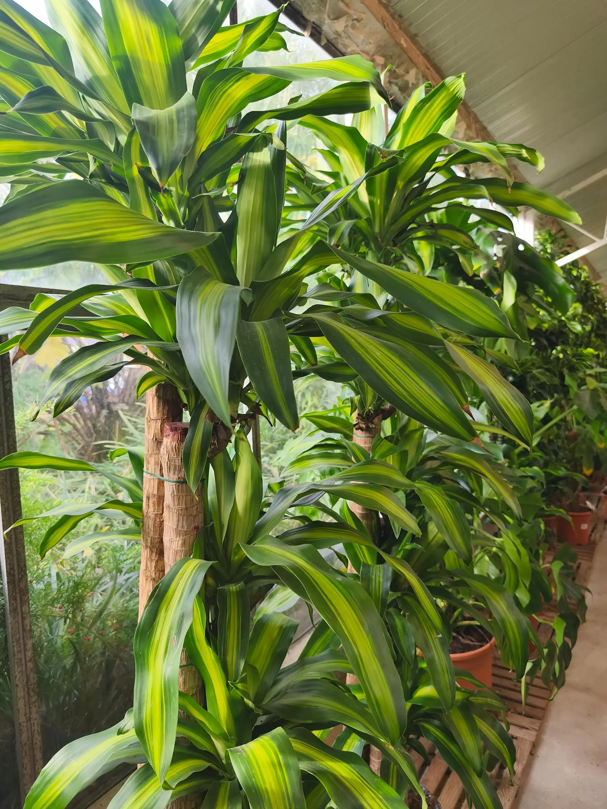
Dracaena
Plantas de cuidado moderado
Si estás dispuesto a dedicar un poco más de tiempo, estas son algunas opciones:
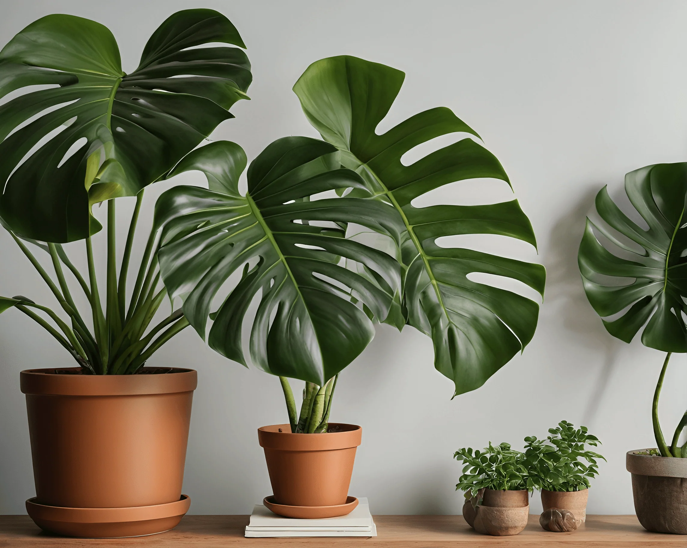
Monstera
(Costilla de Adán)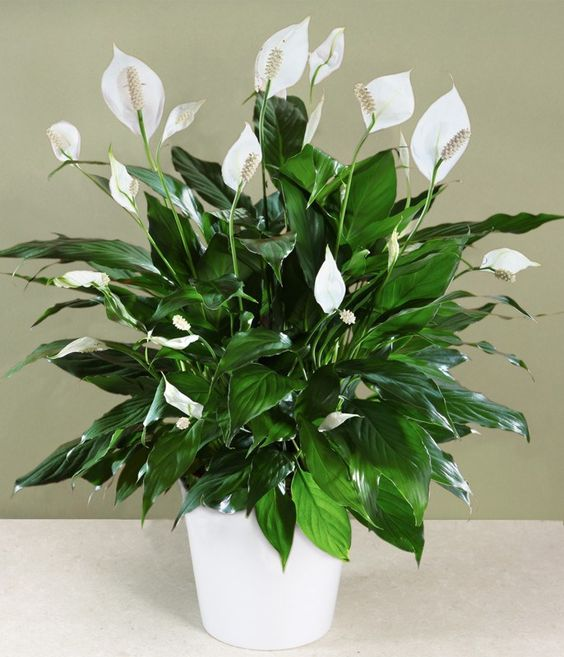
Espatifilo
(Lirio de la paz)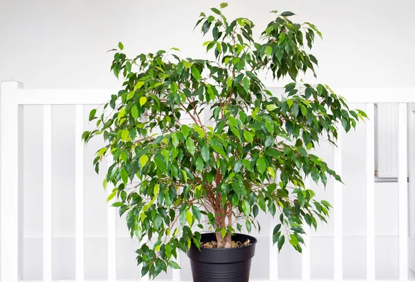
Ficus Benjamina
(higuera llorona)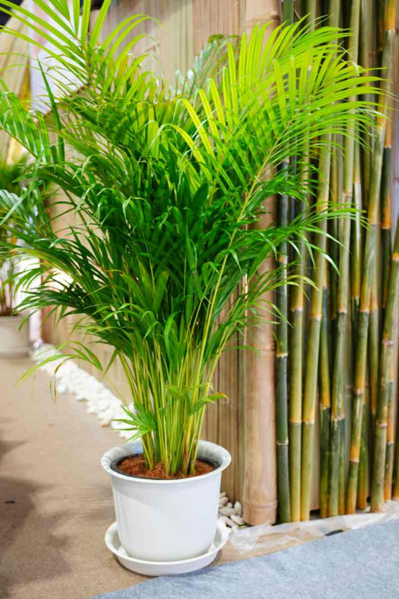
Palma Areca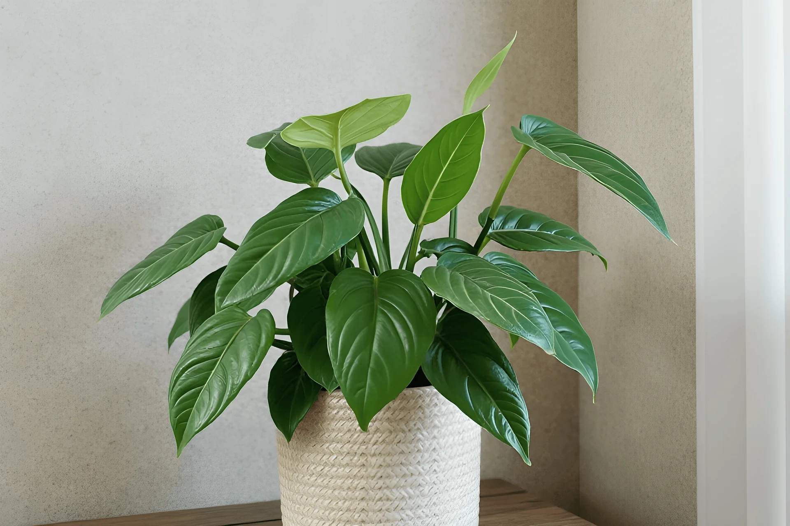
Philodendron
(Filodendro)
Plantas de alto cuidado
Si eres un entusiasta dispuesto a dedicar tiempo y esfuerzo, estas son algunas opciones:
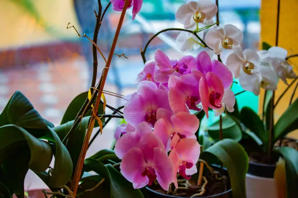
Orquídeas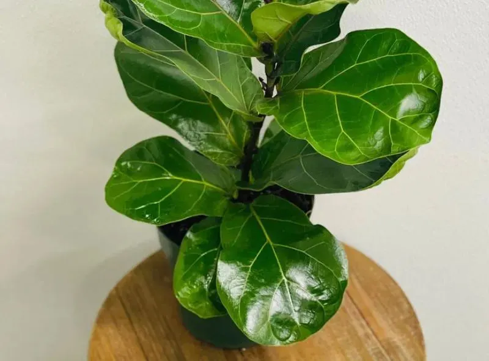
Ficus Lyrata
(Hojas de Violín)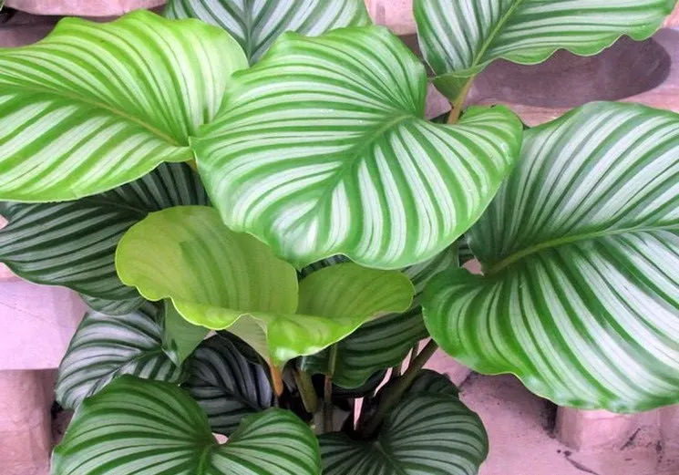
Calathea
(calatea)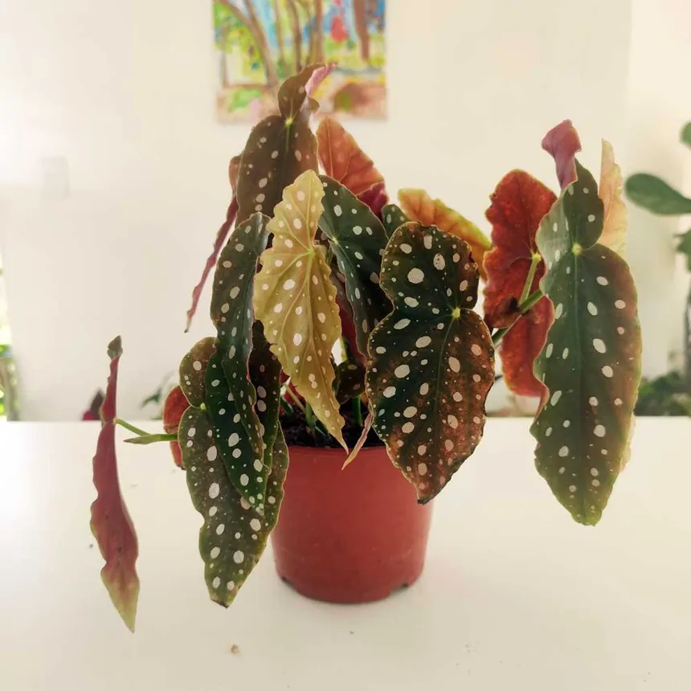
Begonia Maculata
(Begonia ala de ángel)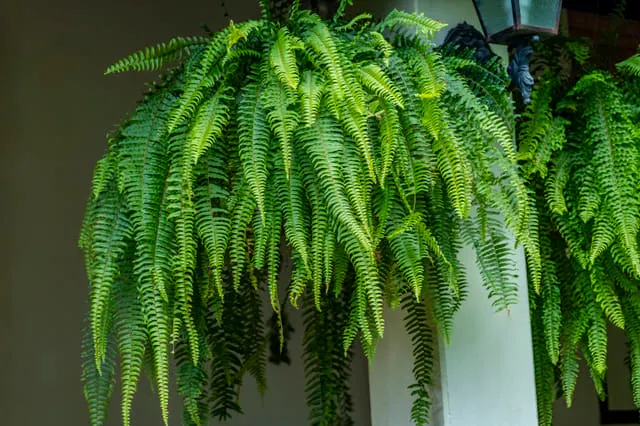
Helecho de Boston
cultivos
Cultivos
Estos son algunos vegetales fáciles de cultivar:
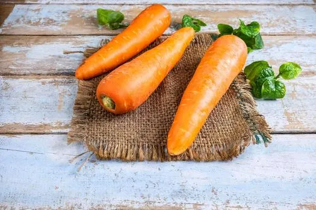
Zanahoria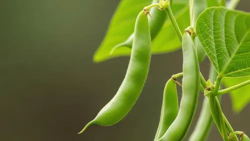
Frijoles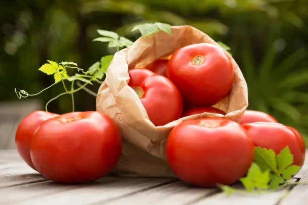
Jitomate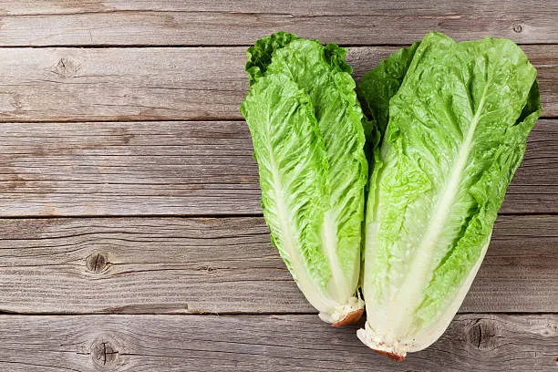
Lechuga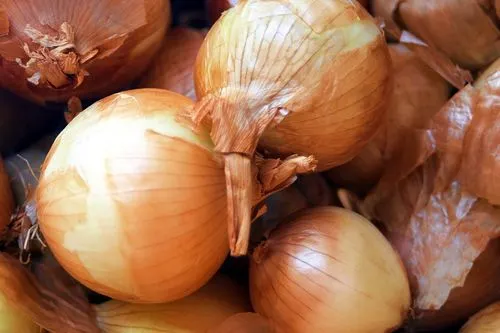
Cebolla